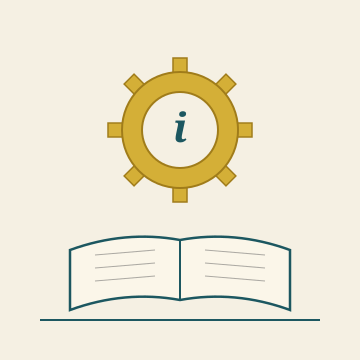

Het Open Vizier · Future · Schooling
A newspaper about thinking without blinkers

★ FUTURE · SCHOOLING
Three questions under one subject: how schooling has developed, how it could evolve, and how it should be organised to genuinely use the knowledge we have. Five articles distributed across those three questions.
★ I · HOW IT HAS DEVELOPED
What today's schooling system costs — economically and humanly.
★ II · HOW THE EVOLUTION COULD GO
What the vision says is possible — learning that meets what the world asks.
★ III · HOW IT SHOULD WORK
Concrete shape — what schools for the future, what AI cannot replace.
★ Source editions
The articles below originate from Edition 1 (Climate & energy), Edition 2 (Tax policy) and Edition 3 (Under the ice), where they appear in their original context.
★ Back to